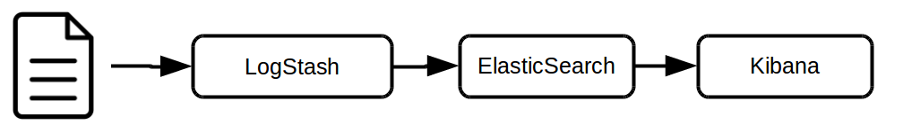

ELK
Introduction à la stack Elastic
Par Claire Villard / @leneurone_eu / GitHub : leneurone

Qui suis-je ?
- Développeur Java depuis 4 ans
- Travaille avec la Stack Elastic depuis 3 ans
- Duchess
Retrouvez cette présentation sur GitHub : http://leneurone.github.io/atelier-duchess-elk/slides/index.html
Programme de l'atelier
Nous allons voir...
... comment parser un fichier et l'enrichir avec LogStash
... comment l'indexer dans ElasticSearch
... et comment exploiter ces données dans Kibana.
Et aussi :
Pour aller plus loin :
L'utilisation de RabbitMQ comme broker de messages
Configurer ElasticSearch en cluster
LogStash
Lit des informations depuis des sources diverses (fichiers, flux syslog, RabbitMQ, ...)
Les découpe selon des regexp
Les transforme et les enrichit
Et les envoie vers des sorties variées (fichiers, RabbitMQ, ElasticSearch, stdout, syslog...)
ElasticSearch
Moteur de recherche
Indexe des données
Interprête des requêtes de recherche et renvoie les résultats associés
Réalise des calculs sur les résultats obtenus (nombre de résultats par catégorie, par date, ...)
Kibana
IHM de visualisation de données contenues dans ElasticSearch
Spécifique à ElasticSearch
Permet de réaliser des requêtes sur ElasticSearch et d'afficher les résultats sous forme de liste et de graphiques
Pré-configurée pour traiter des données en provenance de LogStash...
Petit schéma...

Quelques concepts d'ElasticSearch
Parce qu'il faut comprendre la mécanique interne pour en profiter pleinementLe cluster
Un cluster est un ensemble d'instances d'ElasticSearch, installées sur différents serveurs physiques ou virtuels et travaillant ensemble. Les données sont réparties sur les différents serveurs et accessibles indifféremment de leur emplacement pour assurer la montée en charge et la tolérance aux pannes.
Les Index
Lorsqu'on envoie des données à indexer à ElasticSearch, il faut lui préciser dans quel index elles doivent être stockées. Un index est une sorte de répertoire contenant des données, organisées par l'utilisateur lui-même. Cela permet d'éviter de mélanger des données sans rapport au sein d'un même cluster tout en mutualisant les ressources.
Les shards
Chaque index est séparé en un ou plusieurs shards, contenant chacun une partie des données.
Ces shards sont répliqués, et l'ensemble est réparti au sein du cluster, pour assurer à la fois la scalabilité, les performances, et la tolérance aux pannes.
Le document
Un document est un objet représentant une donnée, et contenant différents champs typés et indexés différemment. C'est l'unité de donnée au sein d'ElasticSearch : un résultat de recherche = un document.
La sémantique est identique à celle d'un document écrit qu'on rédige : un ensemble de texte, ainsi que de métadonnées associées classifiant son contenu, son auteur...
Les analyseurs
Lors de l'indexation, ElasticSearch peut indexer soit les données "telles qu'elles", soit après leur avoir appliqué des transformations pour faciliter leur recherche : passage en minuscule, découpage des mots selon les espaces ou d'autres caractères, ignorer les accents ou les caractères spéciaux, ...
Dans ce dernier cas, les mêmes transformations seront automatiquement appliquées aux critères de recherche. Un ensemble d'opération appliquées à un champ est appelé un analyseur.
Mappings
Pour chaque index, ElasticSearch stocke la manière dont chaque champ de chaque type de document doit être traité dans un mapping.
Templates
Pour permettre de configurer automatiquement les mappings pour tous les index, notamment ceux qui seront créés dans le futur, on va configurer dans ElasticSearch des templates qui seront automatiquement transformés en mappings lors de la création des futurs index.
Et maintenant...
Place à la pratique !